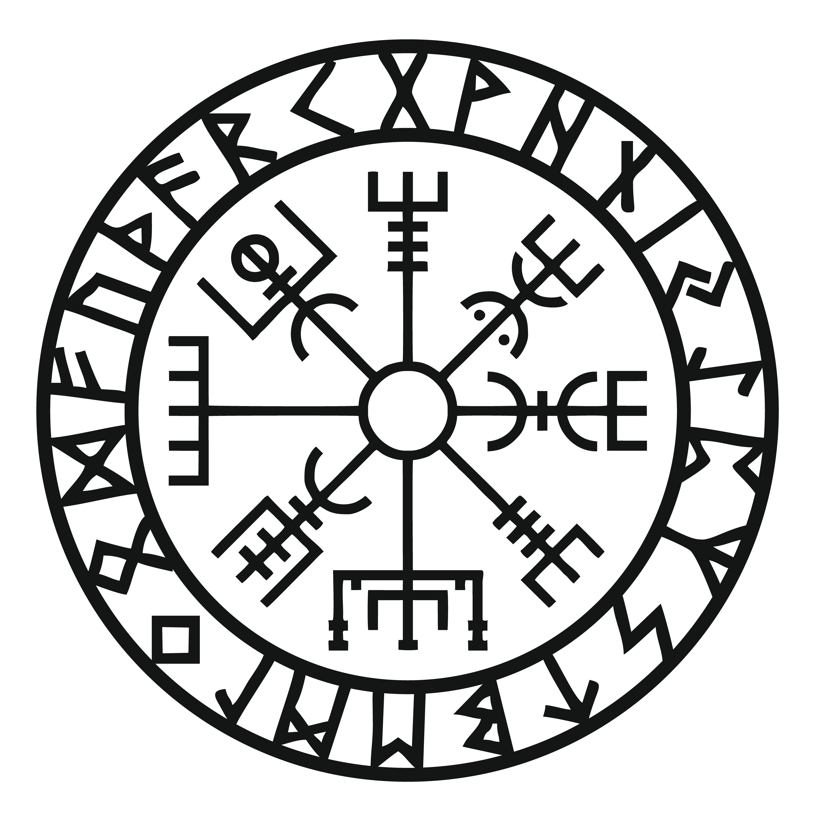
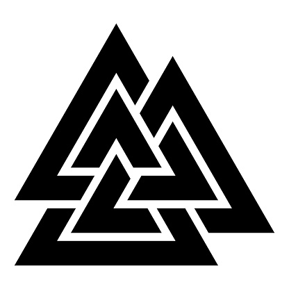
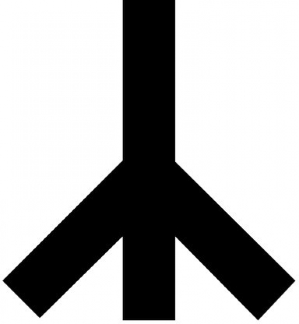
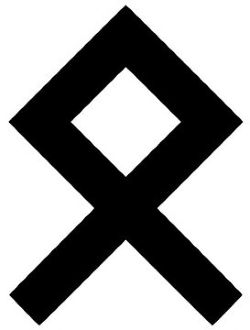
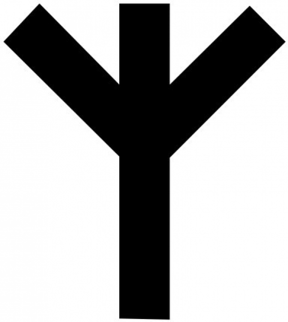
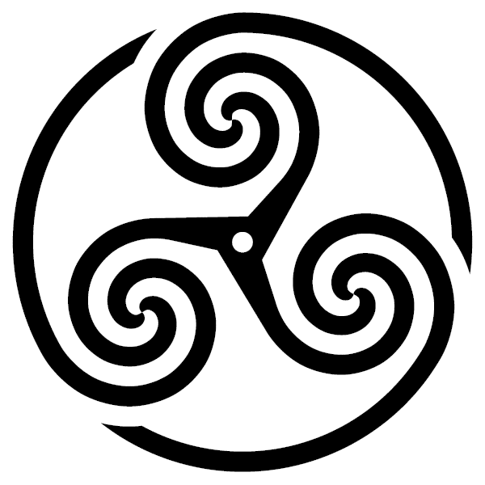
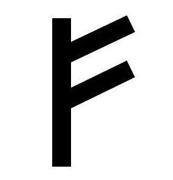
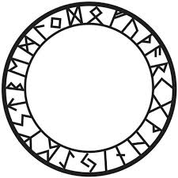

Aesir

Odin
The All-Father.The god of wisdom is also a god of war, battle, death and the husband of the goddess Frigg. Wielding his spear Gungnir that never misses its target and riding atop the fastest steed in the realms Sleipnirr, he rules Valhalla and has his Valkyries bring him the warriors of the fallen to prepare for Ragnarök. Having drunk from the Well of Mimer, hung himself from the Tree of Knowledge and sacrificed his eye in pursuit of wisdom he is both cunning and wise.
Thor
The All-Father.The god of wisdom is also a god of war, battle, death and the husband of the goddess Frigg. Wielding his spear Gungnir that never misses its target and riding atop the fastest steed in the realms Sleipnirr, he rules Valhalla and has his Valkyries bring him the warriors of the fallen to prepare for Ragnarök. Having drunk from the Well of Mimer, hung himself from the Tree of Knowledge and sacrificed his eye in pursuit of wisdom he is both cunning and wise.
Baldr
The All-Father.The god of wisdom is also a god of war, battle, death and the husband of the goddess Frigg. Wielding his spear Gungnir that never misses its target and riding atop the fastest steed in the realms Sleipnirr, he rules Valhalla and has his Valkyries bring him the warriors of the fallen to prepare for Ragnarök. Having drunk from the Well of Mimer, hung himself from the Tree of Knowledge and sacrificed his eye in pursuit of wisdom he is both cunning and wise.
Heimdallr
The All-Father.The god of wisdom is also a god of war, battle, death and the husband of the goddess Frigg. Wielding his spear Gungnir that never misses its target and riding atop the fastest steed in the realms Sleipnirr, he rules Valhalla and has his Valkyries bring him the warriors of the fallen to prepare for Ragnarök. Having drunk from the Well of Mimer, hung himself from the Tree of Knowledge and sacrificed his eye in pursuit of wisdom he is both cunning and wise.
Frigg
The All-Father.The god of wisdom is also a god of war, battle, death and the husband of the goddess Frigg. Wielding his spear Gungnir that never misses its target and riding atop the fastest steed in the realms Sleipnirr, he rules Valhalla and has his Valkyries bring him the warriors of the fallen to prepare for Ragnarök. Having drunk from the Well of Mimer, hung himself from the Tree of Knowledge and sacrificed his eye in pursuit of wisdom he is both cunning and wise.Vanir

Freya
The All-Father.The god of wisdom is also a god of war, battle, death and the husband of the goddess Frigg. Wielding his spear Gungnir that never misses its target and riding atop the fastest steed in the realms Sleipnirr, he rules Valhalla and has his Valkyries bring him the warriors of the fallen to prepare for Ragnarök. Having drunk from the Well of Mimer, hung himself from the Tree of Knowledge and sacrificed his eye in pursuit of wisdom he is both cunning and wise.
Frey
The All-Father.The god of wisdom is also a god of war, battle, death and the husband of the goddess Frigg. Wielding his spear Gungnir that never misses its target and riding atop the fastest steed in the realms Sleipnirr, he rules Valhalla and has his Valkyries bring him the warriors of the fallen to prepare for Ragnarök. Having drunk from the Well of Mimer, hung himself from the Tree of Knowledge and sacrificed his eye in pursuit of wisdom he is both cunning and wise.